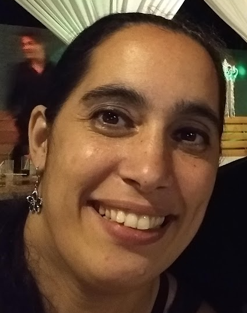

Soledad del Rio
Rosario - Santa Fé - Argentina
Estudiante
En busqueda Activa de Empleo!

Experiencia Laboral
- Encargada de bar
- Secretaria
- Cajera de supermercado
Estudios
- Secundaria completa
- Universitaria incompleta - en curso una materia anual - Ing. en Sistemas de Informacion
- Argentina Programa: Primera etapa, segunda etapa, ingles
Habilidades
- Siempre con ganas de aprender y paciencia para enseñar.
- Empatia
- Comunicacion
- Resolucion de problemas
- Trabajo en equipo